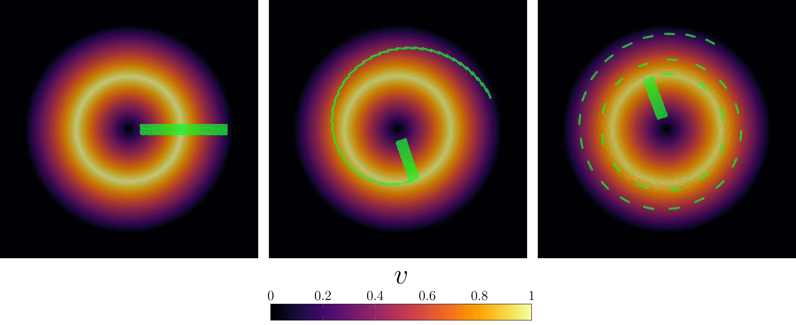

Example 1: Gresho Vortex Benchmark
Gresho vortex is a very simple test which allows to compare a numerical solution to analytical result for arbitrary Mach number. The setup is a domain (usually square) with a prescribed vortex as the initial condition. The vortex should be steady in theory but it is not trivial to reproduce such behavior in a numerical code, especially since the initial condition is not a differentiable function.
Let us start by including LagrangianVoronoi module and importing some useful libraries.
module gresho
include("../src/LagrangianVoronoi.jl")
using .LagrangianVoronoi, WriteVTK, LinearAlgebra, Match
using LaTeXStrings, DataFrames, CSV, Plots, MeasuresDeclare constant parameters of the simulation. Especially the Mach number and the resolution.
const rho0 = 1.0 # initial density
const xlims = (-0.5, 0.5)
const ylims = (-0.5, 0.5)
const N = 100 # resolution
const dr = 1.0/N
const dt = 0.1*dr
const t_end = 1.0
const nframes = 100 # number of time frames (how many times we save the simulation state)
const Ma = 0.1 # Mach number
const c0 = 1.0/Ma # speed of sound
const gamma = 1.4 # adiabatic index
const stiffened = (c0 > 100) # do we use ideal or stiffened gas model?
const P0 = rho0*c0^2/gamma # initial density in the vortex core
const export_path = "results/gresho/Ma$Ma"Define the exact solution, which is the same as initial condition.
function v_exact(x::RealVector)::RealVector
omega = @match norm(x) begin
r, if r < 0.2 end => 5.0
r, if r < 0.4 end => 2.0/r - 5.0
_ => 0.0
end
return omega*RealVector(-x[2], x[1])
end
function P_exact(x::RealVector)::Float64
Pmin = (stiffened ? 0.0 : P0)
return @match norm(x) begin
r, if r < 0.2 end => Pmin + 12.5*r^2
r, if r < 0.4 end => Pmin + 4.0 + 4*log(5*r) - 20.0*r + 12.5*r^2
_ => Pmin - 2.0 + 4*log(2)
end
endThis function enforces the inital condition on a VoronoiPolygon.
function ic!(p::VoronoiPolygon)
p.v = v_exact(p.x) # velocity
p.rho = rho0 # density
p.mass = p.rho*area(p) # mass
p.P = P_exact(p.x) # pressure
p.e = 0.5*norm_squared(p.v) + p.P/(p.rho*(gamma - 1.0)) # internal energy
endThe Simulation worspace struct contains all simulation data, namely:
- grid (and all local variables within)
- pressure solver (allows us to solve an implicit system)
- global (non-constant) variables
Polygons are generated in its constructor.
mutable struct Simulation <: SimulationWorkspace
grid::GridNS
solver::PressureSolver{PolygonNS}
E::Float64 # total energy
l2_err::Float64 # L^2 error
Simulation() = begin
domain = Rectangle(xlims = xlims, ylims = ylims)
grid = GridNS(domain, dr)
populate_circ!(grid, ic! = ic!)
return new(grid, PressureSolver(grid), 0.0, 0.0)
end
endFunction step! defines how simulation workspace changes when we update the time by dt. Number t is the simulation time before the update. We do not really need t but the module requires this argument.
function step!(sim::Simulation, t::Float64)
move!(sim.grid, dt)
if stiffened
stiffened_eos!(sim.grid, gamma, P0) # stiffened gas equation of state
else
ideal_eos!(sim.grid, gamma) # ideal gas equation of state
end
find_pressure!(sim.solver, dt)
pressure_step!(sim.grid, dt)
find_D!(sim.grid)
viscous_step!(sim.grid, dt)
find_dv!(sim.grid, dt)
relaxation_step!(sim.grid, dt)
return
endFunction postproc!is called each time before the data is saved (much less often than step!). It can be used for post-processing but let's just print some information to the console.
function postproc!(sim::Simulation, t::Float64)
sim.l2_err = 0.0
sim.E = 0.0
for p in sim.grid.polygons
sim.l2_err += p.mass*norm_squared(p.v - v_exact(p.x))
sim.E += p.mass*p.e
end
sim.l2_err = sqrt(sim.l2_err)
percent = round(100*t/t_end, digits = 5)
println("t = $t ($(percent)%)")
println("energy = $(sim.E)")
println("error = $(sim.l2_err)")
println()
endWrap everything into the main function. Once the simulation ends, extract the velocity along midline and plot it.
function main()
sim = Simulation()
run!(sim, dt, t_end, step!;
path = export_path,
postproc! = postproc!,
vtp_vars = (:v, :P), # local variables exported into vtp
csv_vars = (:E, :l2_err), # global variables exported into csv
nframes = nframes # number of time frames
)
vy = Float64[]
vy_exact = Float64[]
x_range = 0.0:(2*dr):xlims[2]
for x1 in x_range
x = RealVector(x1, 0.0)
push!(vy, point_value(sim.grid, x, p -> p.v[2]))
push!(vy_exact, v_exact(x)[2])
end
csv_data = DataFrame(x = x_range, vy = vy, vy_exact = vy_exact)
CSV.write(string(export_path, "/midline_data.csv"), csv_data)
plot_midline()
end
function plot_midline()
csv_data = CSV.read(string(export_path, "/midline_data.csv"), DataFrame)
plt = plot(
csv_data.x,
csv_data.vy_exact,
xlabel = L"x",
ylabel = L"v_y",
label = "exact",
color = :black,
axisratio = 0.5,
bottom_margin = 5mm,
linewidth = 2.0
)
plot!(
plt,
csv_data.x,
csv_data.vy,
label = "simulation",
markershape = :hex,
markersize = 3,
linewidth = 2.0
)
savefig(plt, string(export_path, "/midline_plot.pdf"))
endThis piece of code allows to run the script from the terminal.
if abspath(PROGRAM_FILE) == @__FILE__
main()
end
endThis page was generated using Literate.jl.